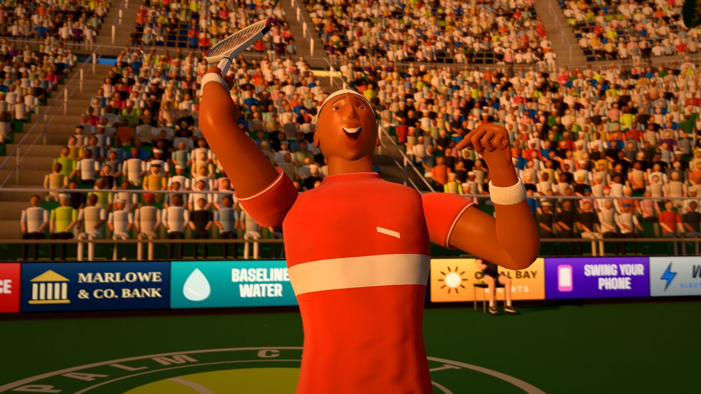

Key takeaways
- Nerves are normal and cannot be switched off. What you can control is your routine, your breathing, your focus and your choice of shot.
- Use the same routine between every point, whatever the score. It brings you back to the present and to the next ball.
- On big points, play your most reliable pattern with a clear target. Do not suddenly play safe and passive, and do not try something you have never practised.
- After a mistake, one reaction, then reset. Practise pressure in training so that it is familiar in a match.
What pressure does to you
On a big point the body reacts as if something important is at stake: the heart beats faster, breathing gets shallow and muscles tighten. Players often find their swings shorten, their grip tightens, their feet stop moving and their decisions become rushed or very cautious. The result is often a double fault, a mistimed return or a tentative shot into the net. These are normal reactions, felt at every level of the sport. The aim is not to feel nothing but to have tools that let you play well while you feel it.
A routine between points
Much of a tennis match is the time between points, and what you do in that time shapes how you play. A simple routine has four steps:
- React. Allow yourself a short reaction to the last point, positive or negative, then let it go. Turn away from the net and walk to the back of the court.
- Reset. Take a slow breath, adjust your strings, wipe your hands with a towel. Using your body to say "that point is over" helps.
- Plan. Decide what you will do on the next point: the serve you will use and where, or the pattern you will try on the return. A plan gives your mind something to hold on to.
- Ready. Use a fixed signal to start the next point: bounce the ball a set number of times, take a breath, pick the target. Then play.
Use the same routine whether you are winning or losing. Use the time the rules allow, and do not hurry when you are behind. The serving article shows how a pre-serve routine fits with the toss.
Breathing and body
Slow breathing is the simplest way to calm the body. Breathe in through your nose for about four counts and out slowly through your mouth for about six; a long out-breath is commonly taught as a way to settle the heart rate. Drop your shoulders, unclench your jaw and loosen your grip. Walk a little slower. Stand tall, because an upright posture makes it easier to breathe fully. If you notice your swing getting short and fast, slow your preparation and finish the shot.
Focus: one ball at a time
Pressure grows when you think about the outcome: the score, what happens if you lose, what people will say. Focus is the opposite: choosing something you can control and attending to it. Good options are the target of the next shot, your footwork, or a one- or two-word cue such as "early" or "through". Pick a cue that is specific and positive. Telling yourself "do not double fault" tends to keep the double fault in your head, while "toss up, reach high" tells your body what to do. Ask yourself, "What is my job on this ball?" and then do that job.
Playing big points
Break points, deuce points, set points and tiebreak points feel different. Some principles help:
- Play your best pattern. Do what has worked: the serve you hit well, the cross-court rally. A big point is not the moment to try a new shot.
- Commit to a target before the point. Hesitating between two options is what produces tentative shots.
- Do not go passive. Pushing the ball back gives your opponent time to attack. Keep your normal swing, with a generous margin over the net.
- Do not go reckless. Winners are not required. Make the opponent play one more ball.
- Serve with a plan. On the first serve pick a safe target and swing smoothly. On the second serve rely on spin. The receiver's side of the same moment is in the return article.
- Remember the scoring. A game won from 30-40 down counts exactly the same as one won at love. Every point is worth one point, and the next point is always the only one you can play.
When you are ahead
It is common to tighten up when a win is close. The thought "I am nearly there" is as distracting as "I am going to lose". Serving for the set is just another service game. Keep using the same routine and the same tactics, play each point as it comes, and resist the urge to finish quickly. If your opponent starts to play better, do not change the thing that got you ahead unless it has actually stopped working.
Handling mistakes and frustration
- One reaction, then reset. Everyone makes errors, so give the error a moment and then move on to the next point.
- Name the fix, not the flaw. "Late contact, turn earlier" is useful. "I am terrible" is not.
- Look after your body. A bad run often comes with tired legs, shallow breathing or a skipped drink, so deal with those first.
- Keep your behaviour clean. Throwing a racket helps nobody, including you, and it can give your opponent confidence.
- If the opponent is on a run, slow the game down within the rules: towel off, take a sip, and use the full time allowed before your serve, to break their rhythm.
Line calls and fairness
In matches without an umpire, you call the balls on your side. The rule is that any doubt goes to your opponent: if you cannot say that a ball was out, it was good. Calls should be prompt and clear, and not argued after the event. A dispute can be settled quietly by asking your opponent whether they saw it or by replaying the point. Not letting a call ruin your next point is a mental skill in itself, and the scoreboard article covers how to keep the score straight.
Practise pressure
- Start games at 30-40, so the server is always facing a break point.
- Serve tests. Hit ten second serves in a row; every miss means starting from zero.
- Tiebreak practice. Play tiebreaks with a partner so that those 7 points feel familiar.
- Play for something small: a coffee, or the court-clearing duty.
- Review afterwards. After a match, write down which points felt tight and what you did.
Try it in Palm Court
The game is a safe place to practise staying calm. A Tiebreak match (first to 7 points) makes every point matter, and the Pro CPU makes far fewer errors than a Rookie. Survive gives you three lives while the CPU gets sharper with every point, and Blitz is 90 seconds against the clock, which is a lesson in not rushing. The Daily Cup (Play, World Tour, Daily Cup) is one match per day with the same setup for everyone; you can play it as often as you like and your best try today counts, which makes it a good test of whether your routine holds on a given day. There is a short pause after each point before the next serve: use it for your routine, and notice whether your swing is steady. When a close ball is called out, the line review shows the ball's mark and the distance; accept it, as you would a real call, and move on. The singles tactics article pairs well with this one, and the game is a click away.
